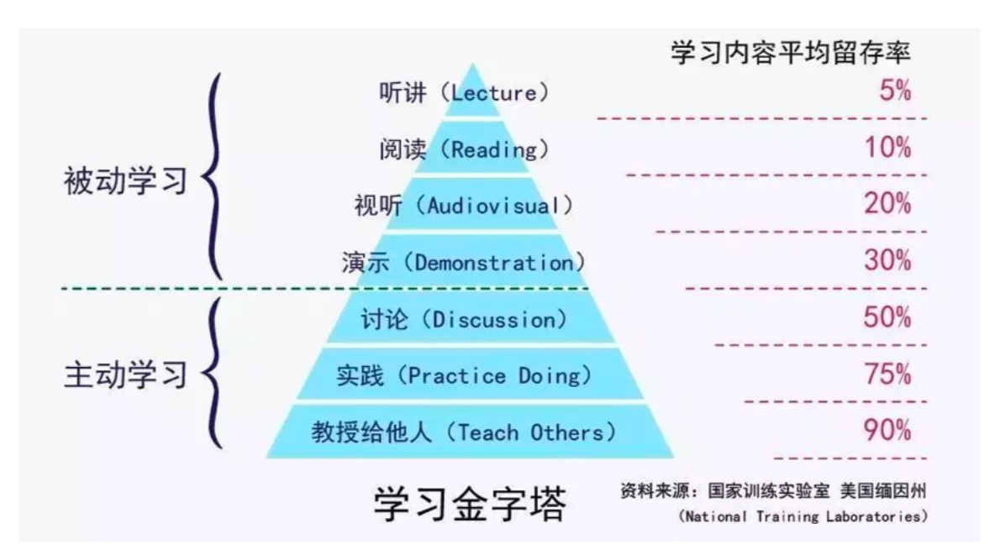

- 000 开篇词 洞悉技术的本质，享受科技的乐趣.md.html
- 001 程序员如何用技术变现（上）.md.html
- 002 程序员如何用技术变现（下）.md.html
- 003 Equifax信息泄露始末.md.html
- 004 从Equifax信息泄露看数据安全.md.html
- 005 何为技术领导力.md.html
- 006 如何拥有技术领导力.md.html
- 007 推荐阅读：每个程序员都该知道的事.md.html
- 008 Go语言，Docker和新技术.md.html
- 009 答疑解惑：渴望、热情和选择.md.html
- 010 如何成为一个大家愿意追随的Leader？.md.html
- 011 程序中的错误处理：错误返回码和异常捕捉.md.html
- 012 程序中的错误处理：异步编程和最佳实践.md.html
- 013 魔数 0x5f3759df.md.html
- 014 推荐阅读：机器学习101.md.html
- 015 时间管理：同扭曲时间的事儿抗争.md.html
- 016 时间管理：投资赚取时间.md.html
- 017 故障处理最佳实践：应对故障.md.html
- 018 故障处理最佳实践：故障改进.md.html
- 019 答疑解惑：我们应该能够识别的表象和本质.md.html
- 020 分布式系统架构的冰与火.md.html
- 021 从亚马逊的实践，谈分布式系统的难点.md.html
- 022 分布式系统的技术栈.md.html
- 023 分布式系统关键技术：全栈监控.md.html
- 024 分布式系统关键技术：服务调度.md.html
- 025 分布式系统关键技术：流量与数据调度.md.html
- 026 洞悉PaaS平台的本质.md.html
- 027 推荐阅读：分布式系统架构经典资料.md.html
- 028 编程范式游记（1）- 起源.md.html
- 029 编程范式游记（2）- 泛型编程.md.html
- 030 编程范式游记（3） - 类型系统和泛型的本质.md.html
- 031 Git协同工作流，你该怎样选.md.html
- 032 推荐阅读：分布式数据调度相关论文.md.html
- 033 编程范式游记（4）- 函数式编程.md.html
- 034 编程范式游记（5）- 修饰器模式.md.html
- 035 编程范式游记（6）- 面向对象编程.md.html
- 036 编程范式游记（7）- 基于原型的编程范式.md.html
- 037 编程范式游记（8）- Go 语言的委托模式.md.html
- 038 编程范式游记（9）- 编程的本质.md.html
- 039 编程范式游记（10）- 逻辑编程范式.md.html
- 040 编程范式游记（11）- 程序世界里的编程范式.md.html
- 041 弹力设计篇之“认识故障和弹力设计”.md.html
- 042 弹力设计篇之“隔离设计”.md.html
- 043 弹力设计篇之“异步通讯设计”.md.html
- 044 弹力设计篇之“幂等性设计”.md.html
- 045 弹力设计篇之“服务的状态”.md.html
- 046 弹力设计篇之“补偿事务”.md.html
- 047 弹力设计篇之“重试设计”.md.html
- 048 弹力设计篇之“熔断设计”.md.html
- 049 弹力设计篇之“限流设计”.md.html
- 050 弹力设计篇之“降级设计”.md.html
- 051 弹力设计篇之“弹力设计总结”.md.html
- 052 区块链技术 - 区块链的革命性及技术概要.md.html
- 053 区块链技术 - 区块链技术细节 - 哈希算法.md.html
- 054 区块链技术 - 区块链技术细节 - 加密和挖矿.md.html
- 055 区块链技术 - 去中心化的共识机制.md.html
- 056 区块链技术 - 智能合约.md.html
- 057 区块链技术 - 传统金融和虚拟货币.md.html
- 058 管理设计篇之分布式锁.md.html
- 059 管理设计篇之配置中心.md.html
- 060 管理设计篇之边车模式.md.html
- 061 管理设计篇之服务网格.md.html
- 062 管理设计篇之网关模式.md.html
- 063 管理设计篇之部署升级策略.md.html
- 064 性能设计篇之缓存.md.html
- 065 性能设计篇之异步处理.md.html
- 066 性能设计篇之数据库扩展.md.html
- 067 性能设计篇之秒杀.md.html
- 068 性能设计篇之边缘计算.md.html
- 069 程序员练级攻略（2018）：开篇词.md.html
- 070 程序员练级攻略（2018）：零基础启蒙.md.html
- 071 程序员练级攻略（2018）：正式入门.md.html
- 072 程序员练级攻略（2018）：程序员修养.md.html
- 073 程序员练级攻略（2018）：编程语言.md.html
- 074 程序员练级攻略：理论学科.md.html
- 075 程序员练级攻略（2018）：系统知识.md.html
- 076 程序员练级攻略（2018）：软件设计.md.html
- 077 程序员练级攻略（2018）：Linux系统、内存和网络.md.html
- 078 程序员练级攻略（2018）：异步IO模型和Lock-Free编程.md.html
- 079 程序员练级攻略（2018）：Java底层知识.md.html
- 080 程序员练级攻略（2018）：数据库.md.html
- 081 程序员练级攻略（2018）：分布式架构入门.md.html
- 082 程序员练级攻略（2018）：分布式架构经典图书和论文.md.html
- 083 程序员练级攻略（2018）：分布式架构工程设计.md.html
- 084 程序员练级攻略（2018）：微服务.md.html
- 085 程序员练级攻略（2018）：容器化和自动化运维.md.html
- 086 程序员练级攻略（2018）：机器学习和人工智能.md.html
- 087 程序员练级攻略（2018）：前端基础和底层原理.md.html
- 088 程序员练级攻略（2018）：前端性能优化和框架.md.html
- 089 程序员练级攻略（2018）：UIUX设计.md.html
- 090 程序员练级攻略（2018）：技术资源集散地.md.html
- 091 程序员面试攻略：面试前的准备.md.html
- 092 程序员面试攻略：面试中的技巧.md.html
- 093 程序员面试攻略：面试风格.md.html
- 094 程序员面试攻略：实力才是王中王.md.html
- 095 高效学习：端正学习态度.md.html
- 096 高效学习：源头、原理和知识地图.md.html
- 097 高效学习：深度，归纳和坚持实践.md.html
- 098 高效学习：如何学习和阅读代码.md.html
- 099 高效学习：面对枯燥和量大的知识.md.html
- 100 高效沟通：Talk和Code同等重要.md.html
- 101 高效沟通：沟通阻碍和应对方法.md.html
- 102 高效沟通：沟通方式及技巧.md.html
- 103 高效沟通：沟通技术.md.html
- 104 高效沟通：好老板要善于提问.md.html
- 105 高效沟通：好好说话的艺术.md.html
- 106 加餐 谈谈我的“三观”.md.html
- 107 结束语 业精于勤，行成于思.md.html
107 结束语 业精于勤，行成于思
不知不觉，一年就这样过去了。这个专栏也到了结束的时候。在结束的时候，我需要跟大家正式说声再见，同时也谢谢各位对本专栏的厚爱，并希望大家从我的专栏里有所收获。我也借最后这个结束语回顾一下整个过程。
老实说，在本专栏刚开始的时候，我对于这个专栏要写点什么是完全没有什么清晰的想法。一方面，我从来没有干过这样的事，这么高频度发表文章的玩法，在一开始来说我其实是相当懵逼的。另一方面，我内心对于收费这个事是很有压力的，不知道要写什么样的内容才值得收费。
平时写 CoolShell，完全是想写什么写什么，别人爱不爱看都无所谓，而对于收费的内容反而有点不知所措了。所以，在不知道要写什么专题的情况下，只能起个“左耳听风”这么烂的名字，哈哈。这也是为什么在一开始专栏的文章比较散乱，也没什么主线的原因。
同时，极客时间的编辑也不希望我写很技术的文章，因为他们对标的是“得到”。所以，我早早就写好的《编程范式游记》压了两个多月，而在一开始发表一些非技术类的和个人成长有关的文章（因为大家都觉得这样的文章不但人气足，而且也是我的专长，呵呵）。直到库存的文章用得差不多的时候，才开始发《编程范式游记》。那时我才觉得我应该一个专题一个专题地写，这样才能够扛得住一整年的更新。
于是才有了后面的《区块链》系列，《分布式系统的本质》系列，和《分布式架构设计模式》系列，再之后是大规模的《程序员练级攻略》，以及个人发展的三个核心主题《面试》、《学习》、《沟通》，加上之前的《时间管理》，《技术领导力》，《技术变现》，以及流程相关的《故障处理》、《Git 协同工作流》、《安全问题》，还有《程序错误处理》、《Go，Docker 新技术选择》等等零散的文章，最终构成了整个专栏。
这其中的选题基本上都是我给其它公司做的咨询的内容，或是我到一些公司里分享中的一些内容，其中的很多内容都是对公司收费的，有的是我做企业培训的内容，有的是我为企业解决实际问题后的总结和归纳，有的则是我为企业做的整体架构的设计方案。
除此之外，还有我个人的很多的我一些比较私房的，只会跟我关系比较近，或是我觉得值得帮的人，才会分享的经验。这些东西我基本上都写在这个专栏里了。而且你可以发现，我的专栏的大多数文章都是在超标中，超过了原有的 5 分钟的音频时长，很多文章都是 10 分钟以上的，甚至 15 分钟左右的文章也有好多，最新的一篇沟通的文章长达 27 分钟。
如果按“得到”那样一篇 2000 字音频 5 分钟，我的确也可以做到每周 5 篇的更新速度（但是每篇文章就不完整了）。对此，我觉得我还是对得起这个收费专栏的，因为这些内容我问企业的收费都比这个专栏高得多得多。这也是这个专栏在运作到一半的时候开始涨价的缘故，还希望大家能理解。
当然，在写这个专栏的过程也是令我非常痛苦的，我基本上搭上了我的周末和节假日，因为我平时还有我的主业。我的主业在创业，各种忙，所以只能使用晚上或是休息时间。尤其是在写《程序员练级攻略》的时候，我足足花了 4-5 个月的时间，基本上把整个互联网人肉地翻了一遍。我在这几个月的时间里阅读了至少上千篇文章，最后我对整个互联网我能找得到的知识进行梳理和筛选，去除了至少 2/3 到 3/4 的内容，产生了现在你看到的专栏文章，然而也是很庞大的。
然而，这个过程，对我也是很有收获的。一方面，我挑战了自己，我发现居然可以这么高产，有这么多的东西可以写下来。有很多系列，完全是可以出书的，这个专栏我觉得要出上 4-5 本书是没有问题的（当然，我不会出的）。
另一方面，也是最重要的一方面，我的创业过程中见的人接收到的信息是以前打工时代的一百倍以上，我每天都在不停地学习，思考和总结。所以，正好用这个机会把我的这些思考和想法给总结下来了，这对于我个人来说，比这个专栏的意义更大。从这两方面，我觉得我的成长和收获远远超过了这个收费专栏的收入，因为这种成长的感觉是多少钱都换不来的。
好了，讲完这个专栏和我自己在这个专栏中的收获，我该谈谈对读者的期望和寄语了。我在我的专栏中不断地说过，学习是没有捷径的，是逆人性的，你需要长期地付出时间和精力。如果一个人订一个收费专栏就可以成为高手，那么这种“高手”早就被“北大青鸟”这样的培训公司“量产”了。
不过，好在现在的人都被微博、微信、知乎、今日头条、抖音等这些 App 消费着（注意：我说的不是人在消费 App，而是人被 App 消费），然后英文还不行，科学上网也不行。所以，你真的不需要努力，只需要正常，你就可以超过绝大多数人。
你真的千万不要以为你订几个专栏，买几本书，听高手讲几次课，你就可以变成高手了。这就好像你以为你买了一个高级的机械键盘，27 吋的 4K 屏、高性能的电脑，高级的人体工程学的桌椅，你就可以写出好的代码来一样。我们要成为一个好的羽毛球高手，不是买几副好的运动装备，到正规的体育场去打球，而是要付出常人不能付出的汗水甚至伤痛。任何行业都是这样的。
这里，我还要把我《高效学习》中那个学习金字塔再帖出来。

再次强调一下，这个世界上的学习只有两种，一种是被动学习，一种是主动学习。听课，看书，看视频，看别人的演讲，这些统统都是被动学习，知识的留存度最多只有 30%，不信你问问自己，今天我的专栏中，你记住了多少？而与别人讨论，实践和传授给别人，是主动学习，其可以让你掌握知识的 50% 到 90% 以上。
所以，我希望我的专栏没有给你带来那种速成的幻觉，而是让你有了可以付出汗水的理由和信心。我没有把我获取知识的手段和我的知识图给隐藏起来，然后，用我理解的东西再贩卖给大家。这样，我可以把我的《程序员练级攻略》一共拆成 20-30 个小专栏，然后一点一点地来收割大家，这样，我可以把大家困在知识的最底层。
然而，我并没有这样做。我觉得大家应该要去自己读最源头的东西，源头的文章都有很多的链接，你也会有第一手的感受，这样你可以顺着找到更好的知识源，并组织出适合你自己的学习路径和地图。订阅我的专栏，如果你不能够按照我专栏里的那些东西去践行的话，那么也毫无意义。
这也是为什么我在我的读者群中推荐出 ARTS 的任务，每个人每周一个 Algorithm，Review 一篇英文文章，总结一个工作中的技术 Tip，以及 Share 一个传递价值观的东西！我希望这个事可以给大家得到相应的算法、代码、技术和影响力的训练。如果你不去践行，那么我专栏上的这些东西你也就只是看看罢了。
在实施的过程中，我们建立了一个近 500 人的读者微信群，进这个群的人必需要承诺做 ARTS。然而事实上呢，并没有，敢进这个微信群的人已经很少了，而进来的，过了三个月后，还在坚持做的，只有个位数的人了。这个就是现实。
这个世界不存在知识不够的情况，真的还没有到知识被少数精英的攥在手里面不给大家的情况，这个世界上的知识就像阳光和空气一样，根本不需要你付费，你就可以获得的。问题是，大多数人都失去了获取知识的能力，你就算把知识放在他们面前，他们也不会去学习，他们需要你喂，甚至需要你帮他们嚼碎了，帮他们消化过了，他们才能吃得到，消化得了。这才是最大的问题。不好意思，我又说实话了，难听但是对你有用。
我的专栏更多的是我的经验和心得的分享，不是捷径和知识的搬运。我已经花了 20 年的投入和付出，而我的成长中走了很多的弯路和磨难，我希望我的这些经验可以让你只需要付出我一半的时间就可以远远地超过我。
另外，有很多知识我把其称作为“硬核知识”，这类的知识就像硬核桃一样，相当难啃。就像那些数学公式、计算机底层原理、复杂的网络协议和操作系统的调度等等，这些知识，你除了死磕之外，没有其它的办法。
不要说，某某技术因为太复杂了所以是“反人类的”，那些“硬核技术”不是反人类的，是“反低能人类”的。所以，别把自己归到那个类别中。要学会不断地挑战自己，挑战自己就是不让自己舒舒服服地像个僵尸一样地活着，而是改变自己让自己像凤凰一样在浴火中涅槃重生！